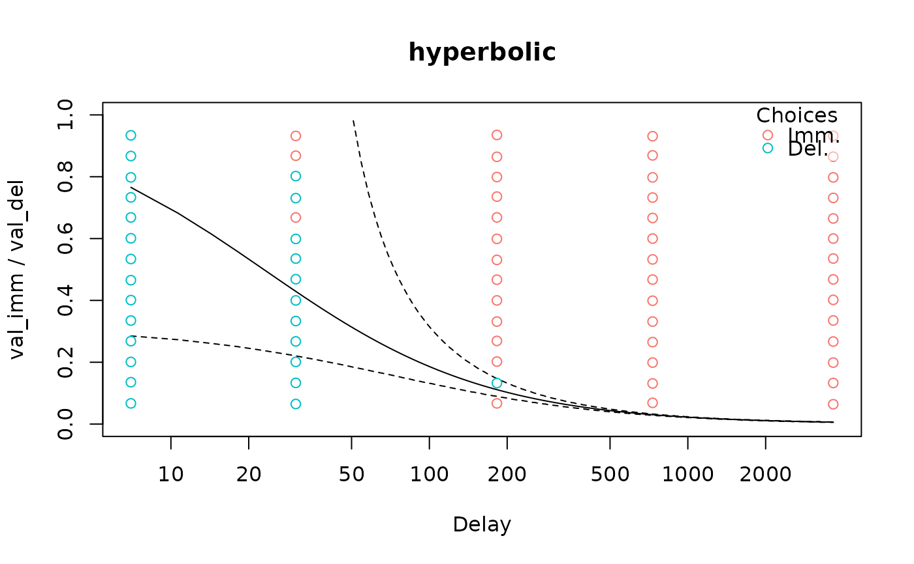

Plot delay discounting models.
Arguments
- x
A delay discounting model. See
dd_prob_modelanddd_det_model.- type
Type of plot to generate.
- legend
Logical: display a legend? Only relevant for
type = 'summary'andtype = 'rt'.- p_lines
Numerical vector. When
type = 'summary'the discount curve, where the probability of selecting the immediate reward is 0.5, is plotted.p_linesallows you to specify other probabilities for which similar curves should be plotted (only applicable for probabilistic models, e.g.td_bcnm,td_bclmandtd_ddm).- p_tol
If
p_linesis notNULL, what is the maximum distance that estimated probabilities can be from their true values? Smaller values results in slower plot generation.- verbose
Whether to print info about, e.g., setting del = ED50 when
type = 'endpoints'.- del
Plots data for a particular delay.
- val_del
Plots data for a particular delayed value.
- q_lines
When
type = 'rt', plot dashed lines for which quantiles of the predicted RT distribution? Default is 0.025 and 0.975 (i.e., a quantile-based 95% confidence interval).- ...
Additional arguments to
plot().
Examples
# \donttest{
data("td_bc_single_ptpt")
mod <- td_bclm(td_bc_single_ptpt, model = 'hyperbolic.1')
#> Warning: glm.fit: fitted probabilities numerically 0 or 1 occurred
plot(mod, type = 'summary', p_lines = c(0.25, 0.75), log = 'x')
#> Plotting indifference curve for val_del = 198.314285714286 (mean of val_del from data used to fit model). Override this behaviour by setting the `val_del` argument to plot() or set verbose = F to suppress this message.

plot(mod, type = 'endpoints')
#> Setting del = 22.8695549353343 (ED50) to center the curve.
#> This can be changed using the `del` argument.
#>
# }